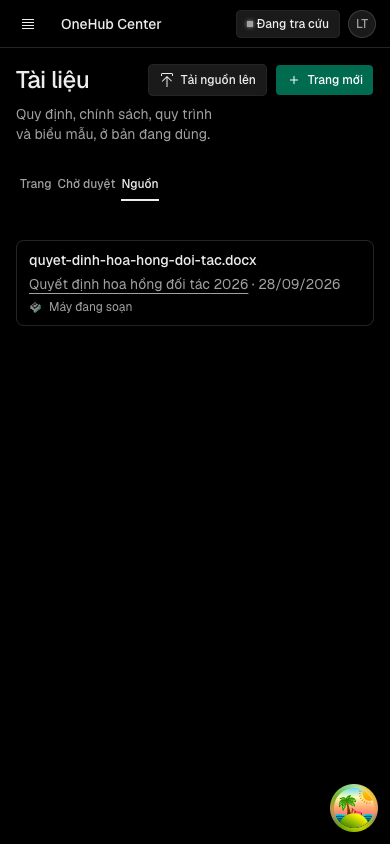
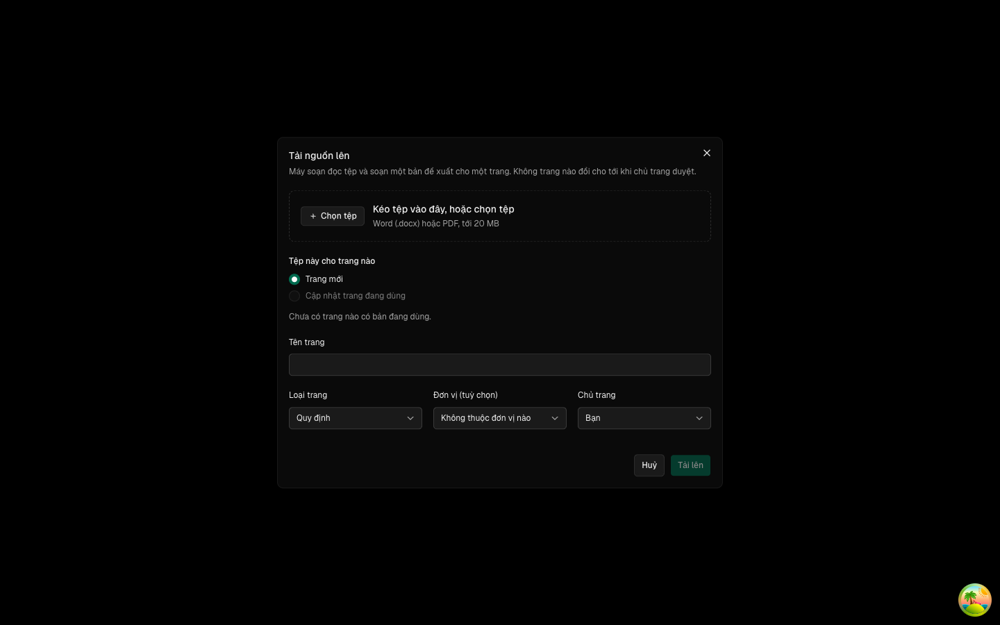
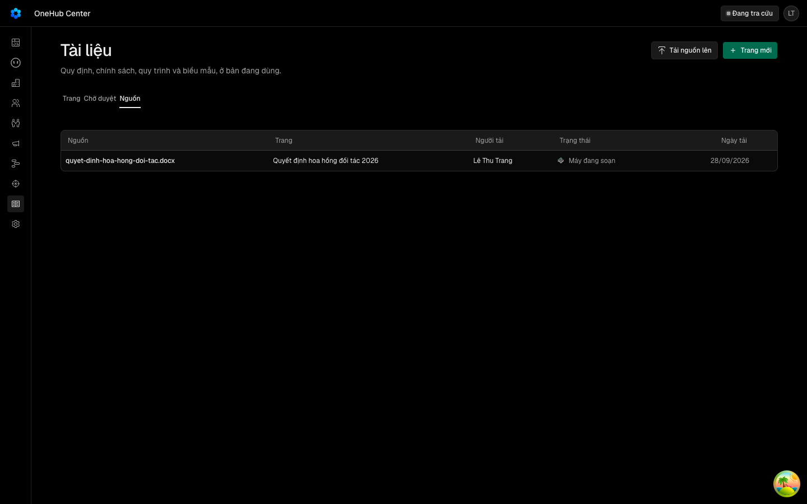
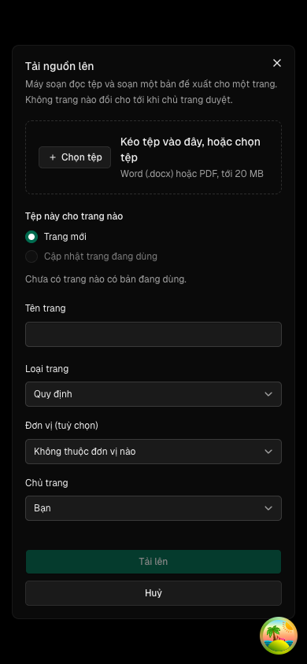

Vùng kéo-thả tệp nguồn (NguonKeoTha) dựng lại trên móc ReUI use-file-upload theo bố cục c-file-upload-3, thay bản vẽ tay bậc 5
Các eval
| Eval | Tiêu chí | Loại | Verdict | run_id | verified_at |
|---|---|---|---|---|---|
| E1 | AC-1 | script | PASS | minted-nguon-keo-tha-reui-E1-r1 | 2026-09-28T11:49:43Z |
| E2 | AC-2 | script | PASS | minted-nguon-keo-tha-reui-E2-r1 | 2026-09-28T11:49:43Z |
| E3 | AC-3 | test | PASS | minted-nguon-keo-tha-reui-E3-r1 | 2026-09-28T11:49:43Z |
| E4 | AC-4 | test | PASS | minted-nguon-keo-tha-reui-E4-r1 | 2026-09-28T11:49:43Z |
| E4b | AC-4 | test | PASS | minted-nguon-keo-tha-reui-E4b-r1 | 2026-09-28T11:49:43Z |
| E5 | AC-5 | test | PASS | minted-nguon-keo-tha-reui-E5-r1 | 2026-09-28T11:49:43Z |
| E5b | AC-5 | test | PASS | minted-nguon-keo-tha-reui-E5b-r1 | 2026-09-28T11:49:43Z |
| E6 | AC-6 | test | PASS | minted-nguon-keo-tha-reui-E6-r1 | 2026-09-28T11:49:43Z |
| E7 | AC-7 | test | PASS | minted-nguon-keo-tha-reui-E7-r1 | 2026-09-28T11:49:43Z |
| E8 | AC-8 | test | PASS | minted-nguon-keo-tha-reui-E8-r1 | 2026-09-28T11:49:43Z |
| E9 | AC-9 | test | PASS | minted-nguon-keo-tha-reui-E9-r1 | 2026-09-28T11:49:43Z |
| E9b | AC-9 | test | PASS | minted-nguon-keo-tha-reui-E9b-r1 | 2026-09-28T11:49:43Z |
| E10 | AC-10 | test | PASS | minted-nguon-keo-tha-reui-E10-r1 | 2026-09-28T11:49:43Z |
| E11u | AC-11 | ui-check | PASS | crm_xenodochial_gould_763cda_do (phien-do session; app http://localhost:4246, api http://localhost:4189) | 2026-09-28T11:49:43Z |
| E12 | AC-12 | script | PASS | minted-nguon-keo-tha-reui-E12-r1 | 2026-09-28T11:49:43Z |
Chi tiết từng eval
PASS E1 · script
AC-1: Given `packages/ui` trước vòng, When vòng cài `@reui/use-file-upload` theo `docs/reui.md`, Then có `packages/ui/src/hooks/use-file-upload.ts` export `useFileUpload`, tệp đó và `nguon-keo-tha.tsx` không có chú thích, không import `cn` hay `lucide-react`; `packages/ui/package.json` không có phụ thuộc `cn`; nhánh của vòng không chạm `button.tsx`, `alert.tsx`, `styles/globals.css` (so với điểm rẽ khỏi `onehub`); không có `src/components/reui/alert.tsx` hay thư mục `src/components/examples/`.
13/13 o dat
PASS E2 · script
AC-2: Given `nguon-keo-tha.tsx` sau vòng, When đọc mã của nó, Then nó lấy trạng thái kéo, bốn bộ bắt kéo-thả, việc mở hộp chọn tệp và ô tệp từ `useFileUpload`, và không tự khai bộ bắt `DragEvent` nào.
kiem moc: dat
PASS E3 · test
AC-3: Given vùng kéo-thả với `chapNhan=".docx,.pdf"` và `toiDaByte` 20 MB, When người chọn qua ô tệp hay thả một tệp đúng loại, đúng cỡ, Then `onChon` nhận đúng tệp đó; When tệp sai loại hay quá cỡ, Then `onChon` không được gọi và `onTuChoi` nhận tệp kèm lý do `loai` hoặc `co`.
Ran 5 tests across 1 file. [333.00ms]
PASS E4 · test
AC-4: Given vùng có `loi`, When hiển thị, Then câu lỗi nằm trong `FieldError` và cả ô tệp lẫn nút «Chọn tệp» mang `aria-describedby` trỏ tới nó; ô tệp mang `aria-invalid="true"`.
Ran 5 tests across 1 file. [333.00ms]
PASS E4b · test
AC-4: Given vùng có `loi`, When hiển thị, Then câu lỗi nằm trong `FieldError` và cả ô tệp lẫn nút «Chọn tệp» mang `aria-describedby` trỏ tới nó; ô tệp mang `aria-invalid="true"`.
Ran 4 tests across 1 file. [368.00ms]
PASS E5 · test
AC-5: Given vùng nhận `tat`, When hiển thị và người thả một tệp, Then ô tệp và nút «Chọn tệp» khoá, lý do hiện ra, `onChon` không được gọi, vùng mang `data-tat="true"`.
Ran 5 tests across 1 file. [333.00ms]
PASS E5b · test
AC-5: Given vùng nhận `tat`, When hiển thị và người thả một tệp, Then ô tệp và nút «Chọn tệp» khoá, lý do hiện ra, `onChon` không được gọi, vùng mang `data-tat="true"`.
Ran 4 tests across 1 file. [368.00ms]
PASS E6 · test
AC-6: Given vùng thường, When người bấm nút «Chọn tệp» (nhãn từ prop `nutChon`, biến thể `outline`), Then hộp chọn tệp của trình duyệt được mở qua ô tệp; ô tệp nằm ngoài thứ tự Tab (`tabIndex=-1`) nên Tab chỉ dừng ở nút, và mang `aria-label` bằng nhãn nút.
Ran 4 tests across 1 file. [368.00ms]
PASS E7 · test
AC-7: Given vùng thường, When một tệp được kéo vào vùng, Then vùng mang `data-keo="true"`; When kéo ra khỏi vùng hoặc thả, Then `data-keo="false"`; Given vùng nhận `tat`, When kéo tệp vào, Then `data-keo` vẫn `"false"`.
Ran 2 tests across 1 file. [353.00ms]
PASS E8 · test
AC-8: Given hộp «Tải nguồn lên» có đích «Trang mới» đã điền tên, When người chọn tệp `.jpg` hay `.docx` 21 MB, Then câu «Chỉ nhận Word (.docx) hoặc PDF, tới 20 MB» nằm dưới ô tệp, `xinCho` không được gọi, tên trang giữ nguyên; đối chứng: tệp `.docx` 1 MB đi hết `xinCho` → PUT → `nhan`.
Ran 3 tests across 1 file. [677.00ms]
PASS E9 · test
AC-9: Given hộp tải và danh sách nguồn, When lưu tệp nguồn chưa bật hoặc tệp tải lên trùng nguồn đã có, Then nút «Tải nguồn lên» khoá kèm câu giải thích, và hộp báo «Nguồn này đã có» dẫn tới nguồn cũ — như trước vòng.
Ran 2 tests across 1 file. [545.00ms]
PASS E9b · test
AC-9: Given hộp tải và danh sách nguồn, When lưu tệp nguồn chưa bật hoặc tệp tải lên trùng nguồn đã có, Then nút «Tải nguồn lên» khoá kèm câu giải thích, và hộp báo «Nguồn này đã có» dẫn tới nguồn cũ — như trước vòng.
Ran 5 tests across 1 file. [640.00ms]
PASS E10 · test
AC-10: Given tệp chữ `apps/app/lib/messages/tai-lieu.ts`, When hộp tải thật hiển thị bằng tiếng Việt hay tiếng Anh, Then tên nút trong vùng kéo-thả đúng trọn chuỗi `keoThaNut` của ngôn ngữ đó («Chọn tệp» / «Choose file»), và bộ canh chữ `messages-guard` xanh.
Ran 1 test across 1 file. [520.00ms]
PASS E11u · ui-check
AC-11: Given ứng dụng thật chạy trên phiên đo riêng, When người mở hộp «Tải nguồn lên» ở 1440 và 390, chọn tệp mẫu `.docx`, điền đích và bấm «Tải lên», Then hộp có vùng kéo-thả, hộp không tràn ngang ở 390, và tab Nguồn có hàng tên tệp với trạng thái «Máy đang soạn».





PASS E12 · script
AC-12: Given `nguon-keo-tha.tsx` và các tệp của khu tài liệu, When design-gate quét tĩnh, Then không tệp nào có màu, góc hay khoảng cách ngoài thang của `docs/design.md`.
design-gate --mode static: mọi tệp tsx của khu tài liệu và packages/ui/src/components/nguon-*.tsx được in tên đã đạt
Eval không phân biệt (Analyst)
Vòng verify
- Round 1: mọi eval máy pass ngay lần chạy đầu (E1–E12, gồm E4b/E5b/E9b, và ui-check E11u); bốn lệnh suite hồi quy (bun run test, bunx turbo run lint --force, bun run lint:slop, bunx turbo run build --force) đều xanh. Không có vòng quay lại implementation.